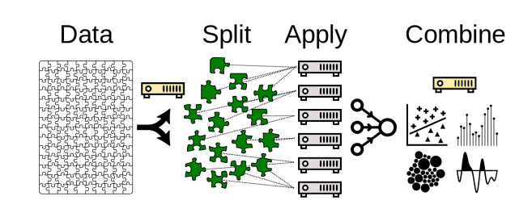
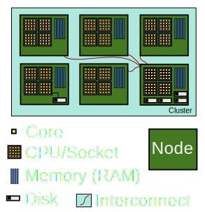
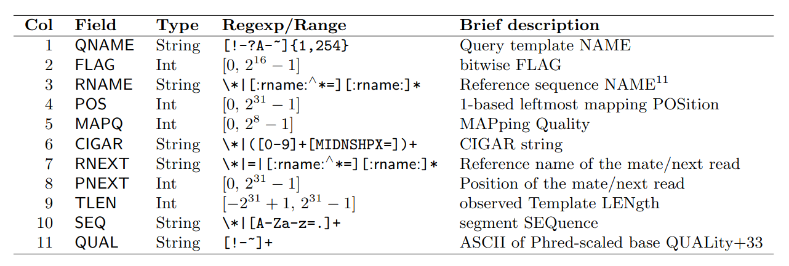
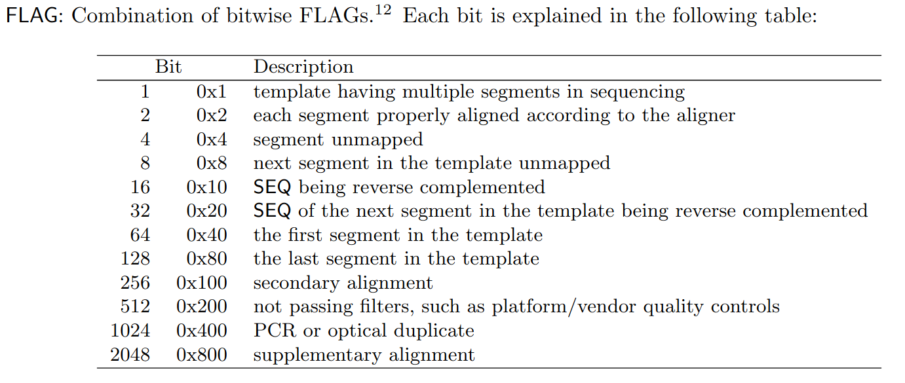
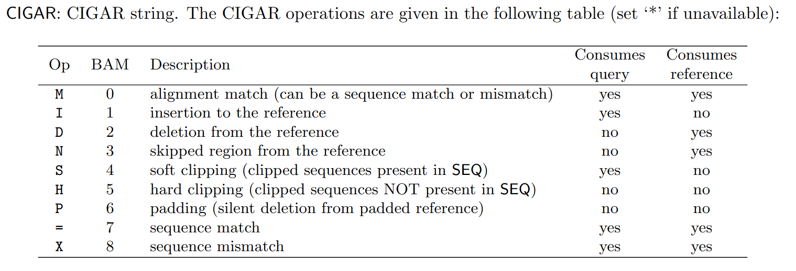
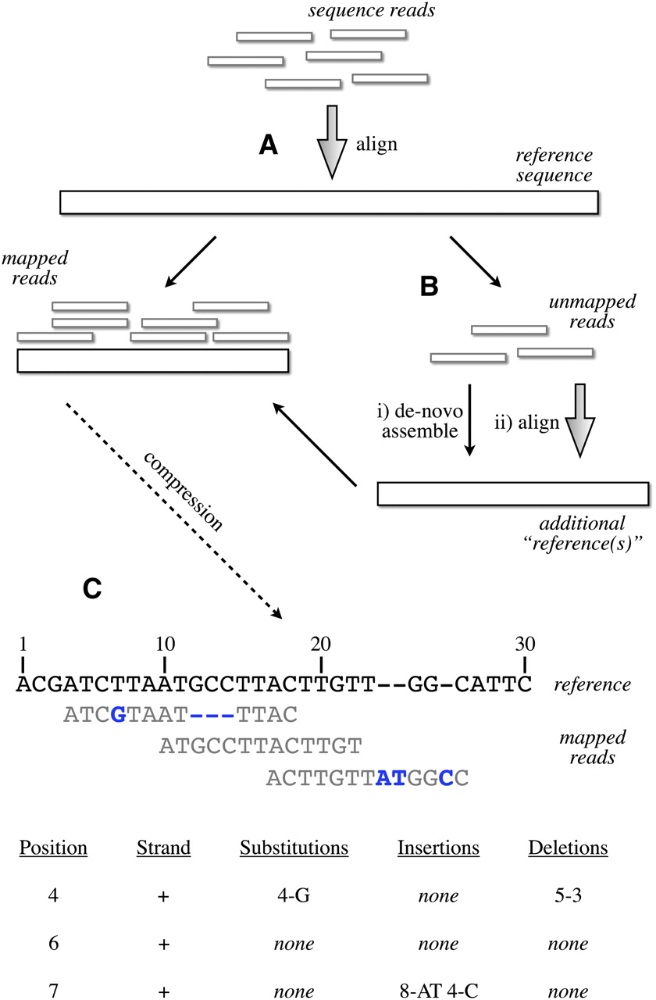

# {{ page.title }}
---
Remember this?
databio.org/seqcosts
---
Lower costs → More data
databio.org/seqcosts
---
### Scalable computing in genomics
Genomics can be 'big data'.

Component of scalability: 1) time and 2) space
---
### Typical epigenome project
- Many independent samples (patients, cell lines, conditions)
- 2 Analysis stages:
1. "Pipeline": Processing raw data
2. "Analysis": Analyzing processed data
---
### Approaches for scalability
1. Parallelization
2. Optimization
3. Compression
4. Databases
---
## 1. Parallelization
> Splitting a compute task, and then completing each split simultaneously.
---
### split-apply-combine

- Many problems call for a similar computing architecture
- *e.g.* MapReduce/Hadoop
---
Scopes of parallelism
by process
by sample
by dependence
---
### Parallel by process
PROs:
- easy to use if the tool can do it (*e.g.* `-c 16`)
- relatively easy in R or Python
CON:
- node-threaded parallelism (restricted to a single node)
- typically built-in to a tool, so limited by tool capacity
---
### Aside: Cluster hardware
---
### Parallel by sample/job
PRO:
- no shared memory; limited only by cluster size
- HPC clusters are intended for this type of parallelization
- Restricted by size of HPC, rather than node (burst to cloud)
- Doesn't depend on the tool
CON:
- requires independence of jobs
---
### Parallel by dependency
PRO:
- not necessarily node-threaded
CON:
- may have shared file-system requirements
- requires a dependency graph of workflow steps
- requires a layer of task management above typical HPC usage
- limited to independent workflow elements
- requires independence of jobs
---
Scopes of parallelism: tradeoffs
by process
by sample
by dependence
---
### Parallel jobs in R
- BatchJobs
- snow
### Parallel processing in R
- [parallel]() package (part of Core R)
```R
lapply(data, func) # serial
mclapply(data, func, mc.cores=detectCores()) # parallel
```
---
### Parallel processing in Python
- subprocess module
```Python
import subprocess
>>> subprocess.run(["ls", "-l"]) # doesn't capture output
CompletedProcess(args=['ls', '-l'], returncode=0)
>>> subprocess.run(["ls", "-l", "/dev/null"], capture_output=True)
CompletedProcess(args=['ls', '-l', '/dev/null'], returncode=0,
stdout=b'crw-rw-rw- 1 root root 1, 3 Jan 23 16:23 /dev/null\n', stderr=b'')
```
- multiprocessing module
```Python
from multiprocessing import Pool
def f(x):
return x*x
if __name__ == '__main__':
with Pool(5) as p:
print(p.map(f, [1, 2, 3]))
```
---
### Workflows
> A workflow or pipeline is a repeatable sequence of tasks that process a piece of data.
flowchart LR
Data --> Task1 --> Task2 --> Task3 --> Output
---
### Workflow spectrum

---
#### Workflow/pipeline engine/framework
> A development toolkit that makes it easier to build workflows.
- Snakemake
- Nextflow
- Common Workflow Language
---
### Snakemake
```console
SAMPLES = ["A", "B"]
rule all:
input:
"plots/quals.svg"
rule bwa_map:
input:
"data/genome.fa",
"data/samples/{sample}.fastq"
output:
"mapped_reads/{sample}.bam"
shell:
"bwa mem {input} | samtools view -Sb - > {output}"
rule samtools_sort:
input:
"mapped_reads/{sample}.bam"
output:
"sorted_reads/{sample}.bam"
shell:
"samtools sort -T sorted_reads/{wildcards.sample} "
"-O bam {input} > {output}"
rule samtools_index:
input:
"sorted_reads/{sample}.bam"
output:
"sorted_reads/{sample}.bam.bai"
shell:
"samtools index {input}"
rule bcftools_call:
input:
fa="data/genome.fa",
bam=expand("sorted_reads/{sample}.bam", sample=SAMPLES),
bai=expand("sorted_reads/{sample}.bam.bai", sample=SAMPLES)
output:
"calls/all.vcf"
shell:
"samtools mpileup -g -f {input.fa} {input.bam} | "
"bcftools call -mv - > {output}"
rule plot_quals:
input:
"calls/all.vcf"
output:
"plots/quals.svg"
script:
"scripts/plot-quals.py"
```
---
### Nextflow
```console
// Script parameters
params.query = "/some/data/sample.fa"
params.db = "/some/path/pdb"
db = file(params.db)
query_ch = Channel.fromPath(params.query)
process blastSearch {
input:
file query from query_ch
output:
file "top_hits.txt" into top_hits_ch
"""
blastp -db $db -query $query -outfmt 6 > blast_result
cat blast_result | head -n 10 | cut -f 2 > top_hits.txt
"""
}
process extractTopHits {
input:
file top_hits from top_hits_ch
output:
file "sequences.txt" into sequences_ch
"""
blastdbcmd -db $db -entry_batch $top_hits > sequences.txt
"""
}
```
---
### Common workflow language
```console
#!/usr/bin/env cwl-runner
cwlVersion: v1.0
class: Workflow
inputs:
tarball: File
name_of_file_to_extract: string
outputs:
compiled_class:
type: File
outputSource: compile/classfile
steps:
untar:
run: tar-param.cwl
in:
tarfile: tarball
extractfile: name_of_file_to_extract
out: [extracted_file]
compile:
run: arguments.cwl
in:
src: untar/extracted_file
out: [classfile]
```
---
### Stop writing shell scripts!
- Shell scripting language is difficult to write
- As a corollary, shell scripts are also generally difficult to read
- Shell scripting lacks the features in a full-service language
---
> The shell makes common and simple actions really simple, at the expense of making more complex things much more complex.
---
> Typically, a small shell script will be shorter and simpler than the corresponding python program, but the python program will tend to gracefully accept modifications, whereas the shell script will tend to get less and less maintainable as code is added.
---
> This has the consequence that for optimal day-to-day productivity you need shell-scripting, but you should use it mostly for throwaway scripts, and use python everywhere else. -Anonymous
---
### Advantages of workflow frameworks
- Reproducibility
- Restartability
- Reusability
- Logging
- Provenance
- Scaling up compute resources
- Dependency management
---
## 2. Optimization
1. Algorithm complexity
2. Language choice and quirks
3. Time/memory tradeoff
---
### Optimization: algorithm complexity
Source: https://www.bigocheatsheet.com/
---
How big of data can you handle?
```R
data.frame(C=1, logN=log(n), N=n, NLogN=n*log(n), NSq=n^2, TwotoN=2^n, NFactorial=factorial(n))
C logN N NLogN NSq TwotoN NFactorial
2 1 0.6931472 2 1.386294 4 4 2
3 1 1.0986123 3 3.295837 9 8 6
4 1 1.3862944 4 5.545177 16 16 24
5 1 1.6094379 5 8.047190 25 32 120
6 1 1.7917595 6 10.750557 36 64 720
7 1 1.9459101 7 13.621371 49 128 5040
8 1 2.0794415 8 16.635532 64 256 40320
9 1 2.1972246 9 19.775021 81 512 362880
10 1 2.3025851 10 23.025851 100 1024 3628800
11 1 2.3978953 11 26.376848 121 2048 39916800
12 1 2.4849066 12 29.818880 144 4096 479001600
13 1 2.5649494 13 33.344342 169 8192 6227020800
14 1 2.6390573 14 36.946803 196 16384 87178291200
15 1 2.7080502 15 40.620753 225 32768 1307674368000
16 1 2.7725887 16 44.361420 256 65536 20922789888000
17 1 2.8332133 17 48.164627 289 131072 355687428096000
18 1 2.8903718 18 52.026692 324 262144 6402373705728000
19 1 2.9444390 19 55.944341 361 524288 121645100408832000
20 1 2.9957323 20 59.914645 400 1048576 2432902008176640000
```
---
## Factorial time $ O(n!)$
Factorial time arises in problems involving permutations
Traveling salesman: find the minimum distance path connecting all points.

Source: [Travelling salesman problem](https://en.wikipedia.org/wiki/Travelling_salesman_problem)
---
## Factorial time $ O(n!)$
Shortest common superstring: Given set of strings S find shortest string containing the strings in S as substrings
Brute force: enumerate all orders

---
## Which is worse?
- $ O(c^n) $ - Exponential time
- $ O(n^c) $ - Polynomial time
---
## Exponential time $ O(2^n) $
Exponential time arises in problems with nested subproblems
Longest common subsequence (LCS): find the longest subsequence common to all sequences in two sequences.
```
def longest_cmn_subseq(s1, s2, ind1, ind2):
if (ind1 == -1 or ind2 == -1): # base case
return 0
if (s1[ind1] == s2[ind2]): # match
return 1 + longest_cmn_subseq(s1, s2, ind1-1, ind2-1)
return max(longest_cmn_subseq(s1, s2, ind1-1, ind2), longest_cmn_subseq(s1, s2, ind1, ind2-1))
longest_cmn_subseq("TCGA", "TGCTA", 3, 4)
3
```
Exponential time comes from the double recursive call
---
## Polynomial time $ O(n^2) $
Nested loops
```python
# Naively align reads to a reference genome
for (r in reads): # Order 10^8 ?
for (p in reference_positions): # Order 10^9
score_alignment(r, p)
```
```python
# Scan for motif matches
for (m in motifs): # Order 10^3
for (s in sequences): # Order 10^7
motif_scan(m, s)
```
---
Find the overlaps

- Sequential search: $ O(n) $ - Linear time
- Binary search $ O(log(n)) $ - Logarithmic time
---
## Constant time $ O(1) $
Array lookup
```
regions[15]
```
Indexes
```
regions[ index(chr1, 1526) ]
```
---
Tabix indexing
Input:
```
chr1 10468 annotation1
chr1 10469 annotation2
chr1 10470 annotation3
```
Compress: `bgzip file.tsv`
Index: `tabix -s 1 -b 2 -e 2 file.tsv.gz`
Retrieve: `tabix file.tsv.gz.tbi chr5:50000-100000`
See [Tabix Bioinformatics paper](https://doi.org/10.1093/bioinformatics/btq671)
---
### Optimization: Language choice
1. Existing implementations are often faster than yours
2. Compiled languages are faster than scripting languages
3. Loops in R are slow
---
### Use vectorized loops in R
```R
library("microbenchmark")
d = matrix(rnorm(10000000), 10, 1000000)
myMeans = function(d) {
means = c()
for (i in 1:ncol(d)) { means[i] = mean(d[,i]) }
means
}
microbenchmark(
myMeans(d),
apply(d, 2, mean),
colMeans(d),
times=3)
Unit: milliseconds
expr min lq mean median uq max neval
myMeans(d) 4693 4880 4997 5067 5149 5230 3
apply(d, 2, mean) 4856 5047 5152 5237 5300 5363 3
colMeans(d) 7 7 7 7 7 8 3
```
---
### Link C code into R or Python
- [Rcpp](http://adv-r.had.co.nz/Rcpp.html) makes it easy to link C++ into R.
- [Extending Python](https://docs.python.org/3/extending/extending.html) shows how to call C extensions from Python
- [Cython](https://cython.org/) compiles Python code into C extensions
---
### Optimization: Speed/memory tradeoff
- Disk I/O is a often bottleneck.
- Prevent reads/writes by loading into memory.
- Memory lookups are quick
---
### Extract ATAC in consensus peaks
Method 1 pseudocode:
```python
def quantify_accessibility(peaks_bed, reads_bam):
with(f as open(peaks_bed)):
count_reads(f.readline(), readsbam)
```
Method 2 pseudocode:
```python
def quantify_accessibility(peaks_bed, reads_bam):
peaks = load_file(peaks_bed)
for (r in peaks):
count_reads(r, readsbam)
```
Which is faster? Which uses more memory?
Could we switch the peaks and reads?
---
### Aside: Cluster hardware

---
# Compression
Does smaller = faster ?
- Zipping files leads to faster transfer
- But zipping files must be unzipped to be read
- But loading less data off disk is faster
- Disk space vs compute time is also a tradeoff
---
### GZIP
- Based on LZ77 and Huffman Coding
---
### Run-length Encoding
```R
> c(rep(1,20), rep(0,15))
[1] 1 1 1 1 1 1 1 1 1 1 1 1 1 1 1 1 1 1 1 1 0 0 0 0 0 0 0 0 0 0 0 0 0 0 0
> rle(c(rep(1,20), rep(0,15)))
Run Length Encoding
lengths: int [1:2] 20 15
values : num [1:2] 1 0
```
---
### LZ77
Duplicate string elimination
1. Find the longest repeated sequences in string
2. Replace repeats with relative references to earlier
Input: "The compression and the decompression leave an impression. Hahahahaha!"
Output: "The compression and t [20 | 3] de [22 | 12] leave [28 | 3] i [42 | 7] . Hah [2 | 7] !"
Example credit: https://sudonull.com
---
### [Huffman Coding](https://en.wikipedia.org/wiki/Huffman_coding)
Minimum redundancy codes
Assign the fewest bits to the most common characters.
DNA Input: ACTGAACGATCAGTACAGAAG
```
Base Freq HuffCode ASCII
A 9 0 01000001
G 5 10 01000111
C 4 110 01000011
T 3 111 01010100
```
See [Okaily et al](https://dx.doi.org/10.1089%2Fcmb.2016.0151)
---
### BAM file format
- FASTQ -> SAM
- SAM [specification](https://samtools.github.io/hts-specs/). Columns

---
### Example SAM file
```
@HD VN:1.6 SO:coordinate
@SQ SN:ref LN:45
r001 99 ref 7 30 8M2I4M1D3M = 37 39 TTAGATAAAGGATACTG *
r002 0 ref 9 30 3S6M1P1I4M * 0 0 AAAAGATAAGGATA *
r003 0 ref 9 30 5S6M * 0 0 GCCTAAGCTAA * SA:Z:ref,29,-,6H5M,17,0;
r004 0 ref 16 30 6M14N5M * 0 0 ATAGCTTCAGC *
r003 2064 ref 29 17 6H5M * 0 0 TAGGC * SA:Z:ref,9,+,5S6M,30,1;
r001 147 ref 37 30 9M = 7 -39 CAGCGGCAT * NM:i:1
```
---

---
```
@HD VN:1.6 SO:coordinate
@SQ SN:ref LN:45
r001 99 ref 7 30 8M2I4M1D3M = 37 39 TTAGATAAAGGATACTG *
r002 0 ref 9 30 3S6M1P1I4M * 0 0 AAAAGATAAGGATA *
r003 0 ref 9 30 5S6M * 0 0 GCCTAAGCTAA * SA:Z:ref,29,-,6H5M,17,0;
r004 0 ref 16 30 6M14N5M * 0 0 ATAGCTTCAGC *
r003 2064 ref 29 17 6H5M * 0 0 TAGGC * SA:Z:ref,9,+,5S6M,30,1;
r001 147 ref 37 30 9M = 7 -39 CAGCGGCAT * NM:i:1
```
```
99 = 01100011
```
```
>>> 99 & 0x1
1
>>> 99 & 0x2
2
>>> 99 & 0x4
0
>>> 99 & 0x8
0
>>> 99 & 0x10
0
>>> 99 & 0x20
32
>>> 99 & 0x40
64
>>> 99 & 0x80
0
```
---
Explain SAM flags
---
```
@HD VN:1.6 SO:coordinate
@SQ SN:ref LN:45
r001 99 ref 7 30 8M2I4M1D3M = 37 39 TTAGATAAAGGATACTG *
r002 0 ref 9 30 3S6M1P1I4M * 0 0 AAAAGATAAGGATA *
r003 0 ref 9 30 5S6M * 0 0 GCCTAAGCTAA * SA:Z:ref,29,-,6H5M,17,0;
r004 0 ref 16 30 6M14N5M * 0 0 ATAGCTTCAGC *
r003 2064 ref 29 17 6H5M * 0 0 TAGGC * SA:Z:ref,9,+,5S6M,30,1;
r001 147 ref 37 30 9M = 7 -39 CAGCGGCAT * NM:i:1
```

---
### BAM
> BGZF is block compression implemented on top of the standard gzip file format. The goal of BGZF is to
provide good compression while allowing efficient random access to the BAM file for indexed queries. The
BGZF format is ‘gunzip compatible’, in the sense that a compliant gunzip utility can decompress a BGZF
compressed file.
---
### BAM
- `.bam` file contains the aligned read data
- `.bai` file contains the index (offsets to locations of bins)
---
### Aside: BigBed and BigWig
- Compressed and Indexed versions of BED and WIG files.
- Compressed: makes the files much smaller.
- Indexed: Random access allows reading specific chunks
---
### CRAM
"Reference-based" compression ([Fritz 2011](https://dx.doi.org/10.1101%2Fgr.114819.110))
---

---
CRAM 3.1: [Bonfield 2022](10.1093/bioinformatics/btac010)
> Although reference compression is where the original work focussed, it is wrong to assume that this is the primary reason for CRAM’s reduced file size. BAM serializes all data together (first name, chromosome, position, sequence, quality and auxiliary fields, then second name, chromosome and so on). This leads to poor compression ratios as names, sequences and quality values all have very different characteristics. CRAM has a column-oriented approach, where a block of names are compressed together or a block of qualities together.
---
### Databases
- Database:Space as Parallelization:Compute
- They offload *storage* requirements
- They are critical for simultaneous multi-user
- Reduce storage requirements by centralizing
- Data has gravity, it brings compute to it
---
### Explosion of biomedical cloud platforms
- AnVIL [Schatz 2021]
- Gabriella Miller Kids First Data Resource Center [Heath 2019]
- Cavatica [Volchenboum 2017]
- Gen3 Workspaces [Hughes 2019]
- Biomedical Research Hub [Barnes 2021]
- AHA Precision Medicine Platform [KassHout 2018]
- CanDIG [Dursi 2021]
- NHLBI BioData Catalyst
- Alex's Lemonade Stand Refine.bio
- Pediatric Cancer Data Commons [Plana 2021]
- SAGE Bionetworks’ Synapse [Grayson 2019]
- NCI Genomic Data Commons [Heath 2021]
---
### Problems with cloud platforms
- Platform lock-in
- Difficulty integrating across platforms
- Duplicated effort for both users and developers